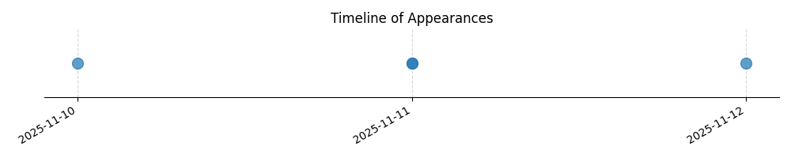

Kategorie: Letecké předpisy
Možnost B je správná, protože pravidla pro let VFR (Visual Flight Rules) obecně vyžadují, aby pilot udržoval takovou výšku, která by mu v případě ztráty výkonu motoru umožnila provést bezpečné nouzové přistání. Možnost A je nesprávná, protože tato pravidla se liší v závislosti na typu prostoru a činnosti. Možnost C je příliš specifická a nezachycuje obecný princip bezpečnosti letu VFR v různých situacích.

| Datum výskytu |
|---|
| 2025-11-12 |
| 2025-11-11 |
| 2025-11-10 |